Название: "Настройка локальной сети передачи данных".
Для сети B выдать подсеть из пространства адресов 172.16.X.Y
Для сети C выдать подсеть из пространства адресов 10.10.X.Y
Для соединения между маршрутизаторами настроить сеть 15.15.X.Y
Где Х – номер варианта, Y – адрес узла
Расчет значений
Процесс выполнения:
1) Разместить на рабочем поле коммутатор и два компьютера и соединить их
2) Подключить консольный кабель для настройки оборудования
3) Настроить адресацию на добавленных компьютерах без шлюза по умолчанию
4) Выполнить проверку работоспособности сети
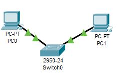
5) Добавить на рабочее поле еще один коммутатор с двумя компьютерами и настроить адресацию из другой подсети
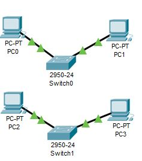
6) Соединить коммутаторы между собой и проверить работоспособность сети
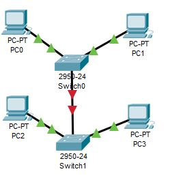
7) В случае неработоспособности сети объяснить причины
Нельзя напрямую соеденить без маршрутизатора
8) Добавить маршрутизатор на рабочее поле
9) Настроить интерфейсы маршрутизатора для существующих подсетей
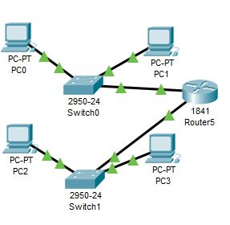
10) Проверить работоспособность сети
11) В случае неработоспособности сети объяснить причины
Не указан шлюз по умолчанию
12) Указать шлюз по умолчанию и отправить сообщение
13) Добавить на рабочее поле еще один маршрутизатор
14) Подключить к нему коммутатор и компьютер
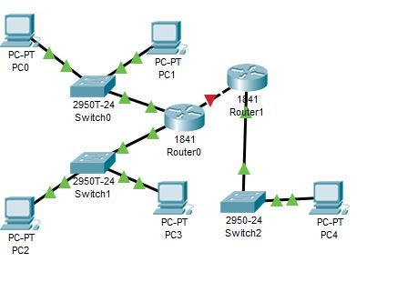
15) Настроить сетевые настройки согласно таблице
16) Соединить между маршрутизаторы и настроить между ними сеть с префиксом /30
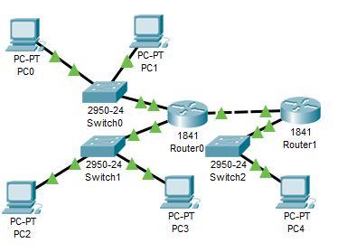
17) Проверить работоспособность сети, отправив сообщение сети A в сеть С и из сети В в сеть С
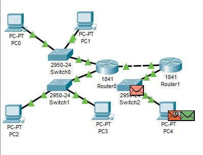
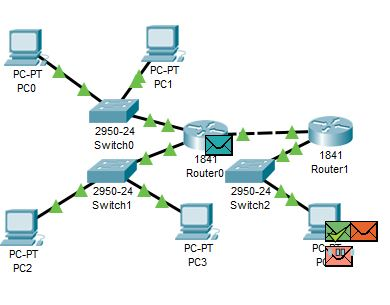
Задание: Настройка коммутаторов и маршрутизаторов.
Начальные условия:
Вариант: №6

Для сети B выдать подсеть из пространства адресов 172.16.X.Y
Для сети C выдать подсеть из пространства адресов 10.10.X.Y
Для соединения между маршрутизаторами настроить сеть 15.15.X.Y
Где Х – номер варианта, Y – адрес узла
Расчет значений
| Lan A | Lan B | Lan C | |
| Количество узлов | 67 | 13 | 675 |
| SubNet | 192.168.6.0 | 172.16.6.0 | 10.10.4.0 |
| Mask | 255.255.255.128 | 255.255.255.240 | 255.255.252.0 |
| Broadcast | 192.168.1.127 | 172.16.6.15 | 10.10.7.255 |
Процесс выполнения:
1) Разместить на рабочем поле коммутатор и два компьютера и соединить их
2) Подключить консольный кабель для настройки оборудования
3) Настроить адресацию на добавленных компьютерах без шлюза по умолчанию
4) Выполнить проверку работоспособности сети
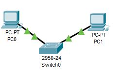
5) Добавить на рабочее поле еще один коммутатор с двумя компьютерами и настроить адресацию из другой подсети
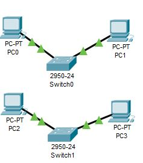
6) Соединить коммутаторы между собой и проверить работоспособность сети
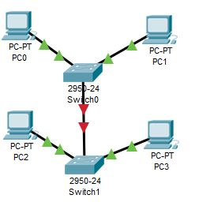
7) В случае неработоспособности сети объяснить причины
Нельзя напрямую соеденить без маршрутизатора
8) Добавить маршрутизатор на рабочее поле
9) Настроить интерфейсы маршрутизатора для существующих подсетей
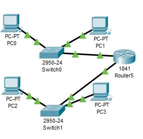
10) Проверить работоспособность сети
11) В случае неработоспособности сети объяснить причины
Не указан шлюз по умолчанию
12) Указать шлюз по умолчанию и отправить сообщение
13) Добавить на рабочее поле еще один маршрутизатор
14) Подключить к нему коммутатор и компьютер
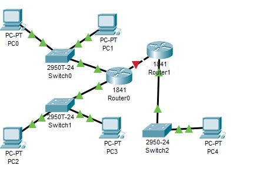
15) Настроить сетевые настройки согласно таблице
16) Соединить между маршрутизаторы и настроить между ними сеть с префиксом /30
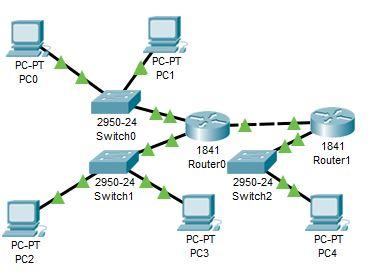
17) Проверить работоспособность сети, отправив сообщение сети A в сеть С и из сети В в сеть С
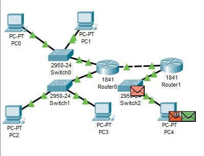
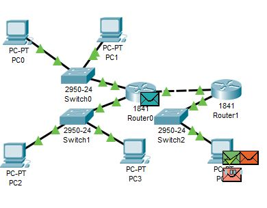